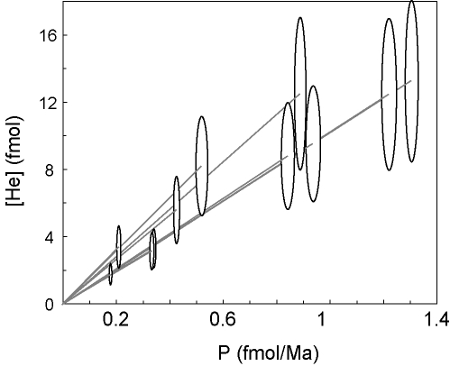
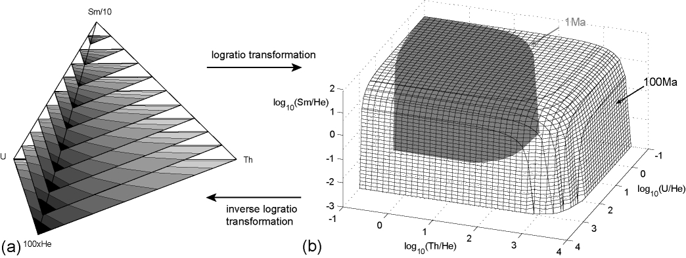

Three new ways to calculate average (U-Th)/He ages
|
Abstract Traditionally the “average” age of multiple (U-Th)/He analyses has been calculated as the arithmetic mean age. This paper presents three alternative methods: (a) in analogy with the fission track method, the pooled age is calculated by adding the respective U, Th and He abundances of several grains together, thereby generating one “synthetic” multi-grain measurement; (b) the isochron age is the slope of helium-concentration versus present-day helium-production; (c) the central age is computed from the geometric mean U-Th-He composition. Each of these methods is more appropriate than the arithmetic mean age in certain applications. The pooled age is useful for comparing single-grain with multi-grain analyses, whereas the isochron age can be used to detect “parentless helium”. The central age is the most accurate and statistically robust way to calculate a sample average of several single-grain analyses because U, Th and He form a ternary system and only the central age adequately captures the statistics of this compositional data space. Fortunately, the expected difference between the arithmetic mean age and the central age is relatively small, less than 1% if the external age reproducibility is better than 15% (1σ). Finally, the (U-Th)/He age equation is visualized on a ternary diagram to illustrate that the α-ejection correction should be applied before, and not after age calculation, in order to avoid a partial linearization of the age equation. Including Sm as a fourth parent element precludes a straightforward visualization of the age equation on a two-dimensional plot. Nevertheless, the pooled, isochron and central age methods can be easily generalized to the case of (U-Th-Sm)/He dating. To facilitate the calculation of the central age, a web-based calculator is provided at http://pvermees.andropov.org/central |
1 Introduction
Radiogenic helium-geochronology is based on a summed set of differential equations:
|
| (1) |
where t = time, [He] = helium abundance, [Pi] = abundance of the ith parent nuclide and λi = decay constant of this nuclide (for 1 ≤ i ≤ n). Despite the simplicity of Equation 1, there are several ways to solve it, three of which will be discussed in Section 2. A linear approximation is accurate to better than 1% for ages up to 100Ma, which can be considered satisfactory in comparison with the external reproducibility of (U-Th)/He dating (20-30%; e.g., Stock et al., 2006). Nevertheless, most researchers rightly decide to calculate an exact age by numerical iteration. This paper raises the point that the accuracy gained by doing so is easily lost by two common practices: (1) performing the α-ejection after, rather than before age calculation and (2) using the arithmetic mean age to summarize a dataset of several single-grain measurements. After Section 3 presents two similarly biased alternatives to the arithmetic mean age that are appropriate for specific applications, Section 4 introduces the central age as the most accurate way to compute average (U-Th)/He ages. The accuracy gained by using the central age instead of the arithmetic mean age is comparable to that gained by iteratively solving the (U-Th)/He age equation instead of using the linear approximation. The only cost of the new procedure is computational complexity. To facilitate the calculations, they are implemented in an online calculator (http://pvermees.andropov.org/central) and illustrated on a published dataset of inclusion-bearing apatites. Finally, Section 5 presents a generalized method to calculate central ages for datasets that also include a fourth radioactive parent, 147Sm.
2 Calculating single-grain ages:
many ways to skin a cat
Ten naturally-occuring long-lived α-emitting radionuclides exist on Earth: 144Nd, 148Sm, 147Sm, 152Gd, 174Hf, 186Os, 190Pt, 232Th, 235U and 238U. For the purpose of helium-thermochronology, all but the heaviest three of these nuclides can often be neglected because of their low abundance and low helium-yield. For example, only one α-particle is produced per 147Sm, whereas six to eight are formed in the Th and U decay series. Further simplification is possible because the present-day 238U/235U-ratio is constant in the solar system (= 137.88; Steiger and Jäger, 1977). Therefore, the ingrowth of helium with time (t) can be written as a function of the elemental U, Th and He abundances or concentrations:
|
| (2) |
with λ232, λ235 and λ238 the decay constants of 232Th, 235U and 238U, respectively. Equation 2 has no analytical solution but is easy to solve iteratively. However, for young ages (t ≪ 1/λ235), a reasonably accurate linear approximation also exists:
|
| (3) |
with P the present-day helium production rate:
|
| (4) |
The accuracy of this solution will be discussed in Section 4. Besides being easy
to implement, the linear age equation is useful for illustrative purposes
and opens up some new applications which will be discussed in Section
3.
Meesters and Dunai (2005) introduced an alternative direct solution to the (U-Th)/He age equation:
|
| (5) |
with λwm the weighted mean decay constant:
![( 137.88- 2 --7-- 2 ) 2
λ = -8-138.88λ-238-+-138.88λ235-[U]-+-6λ232[T-h]
wm P](ternaryhelium5x.png) | (6) |
As shown by Meesters and Dunai (2005) and in Section 4, this solution is remarkably accurate for all practical applications.
3 Multi-grain ages
Equations 2-6 can be used to calculate (U-Th)/He ages from individual U, Th and He measurements, but do not explain how to calculate the “average” value of multiple analyses. Traditionally, the average has been estimated by the arithmetic mean of the single grain ages. This section will introduce two alternative methods for calculating average ages, and the next section will add a third. Each of these new methods is more appropriate than the arithmetic mean age in specific applications.
3.1 The pooled age
Helium can be extracted from the host grain either in a resistance furnace or by
laser-heating in a micro-oven (House et al., 2000). In the former, but sometimes
also in the latter case, it may be necessary to analyze multiple mineral grains
together (e.g., Persano et al., 2007). “Pooling” several grains boosts the signal
strength and sometimes averages out α-ejection correction errors caused by zoning
and mineral inclusions. Vermeesch et al. (2007) introduced the “pooled age” as
the best way to compare multiple single-grain ages with one or more
multi-grain ages, or to compare two sets of multi-grain ages with each other
(Figure 1). The pooled age is calculated by adding the respective U, Th
and He abundances (in moles) of several measurements together, thereby
generating one “synthetic” multi-grain measurement. The age of the pooled
measurement can then be calculated using any of the equations given in Section
2.
An obvious disadvantage of pooling compositional data is that the resulting age is biased to the high U, Th or He compositions. Because such bias can be associated with anomalous grains affected by radiation damage or implanted helium, the pooled age may be wrong by effectively giving extra weight to outliers. However, all these objections are also true for standard multi-grain analyses, which cannot be avoided when dating small, young, or U-Th-poor grains (e.g., Persano et al., 2007). In short, the pooled age must be used for and only for averaging multi-grain aliquots.
|
(a)  (b)
|
3.2 The (U-Th)/He isochron
The previous section showed that (U-Th)/He data can be visualized on a
two-dimensional plot of helium abundance or concentration versus -production
(Figure 1). To calculate a pooled age, it is important that [U], [Th] and [He] are
elemental abundances, expressed in moles. If the data are recast in units
of concentration, some of the bias towards high U-Th-grains disappears
and the He-P diagram can be used to define a (U-Th)/He isochron. This
is an unconstrained linear fit through a series of single-grain (P,[He])
measurements.
For an application of the isochron method, consider the U-Th rich mineral
inclusions in apatite which are often held responsible for erroneously old
(U-Th)/He ages, because they produce “parentless” He. This problem can be
detected with the (U-Th)/He isochron. In the absence of mineral inclusions, the
isochron goes through the origin (P=[He]=0). However, in the presence of
α-emitting inclusions, the isochron is either not defined or does not go through
the origin. For example, consider the worst-case scenario of an α-emitting zircon
inclusion contained in an apatite without U and Th. The inclusion ejects He into
the surrounding apatite that is measured following degassing by heating with a
laser or in a resistance furnace. However, the zircon inclusion will not dissolve in
the concentrated HNO3 that is commonly used to digest apatites prior to U-Th
analysis. Therefore, the apparent (U-Th)-production of such a sample
is zero, and its isochron does not go through the origin of the [He]-P
diagram.
Vermeesch et al. (2007) solved the parentless helium problem by dissolution of the apatite and its inclusions in hot HF. The effectiveness of this technique is illustrated by comparing an inclusion-rich sample from Naxos using the traditional HNO3 method with an HF-treated aliquot of the same sample. The latter defines a well-constrained (U-Th)/He isochron with zero intercept, whereas the former does not (Figure 2). Calculation of the isochron age, including error propagation, can easily be done using the Isoplot Excel add-in (Ludwig, 2003).
4 U-Th-He as a ternary system
The age-equations 2, 3 and 5 do not specify the measurement units of [U],
[Th] and [He]. These can be expressed in moles or moles/g, but they
can also be non-dimensionalized by normalization to a constant sum:
[U’] ≡ [U]/([U]+[Th]+[He]), [Th’] ≡ [Th]/([U]+[Th]+[He]) and [He’] ≡
[He]/([U]+[Th]+[He]) so that [U’] + [Th’] + [He’] = 1. Therefore, U, Th and He
form a ternary system, can be plotted on a ternary diagram, and are subject to
the peculiar mathematics of the ternary dataspace. In a three-component system
(A+B+C=1), increasing one component (e.g., A) causes a decrease in the two
other components (B and C). Another consequence of so-called data closure is
that the arithmetic mean of compositional data has no physical meaning (Weltje,
2002).
4.1 Plotting the (U-Th)/He age equation on ternary diagrams
Following the nomenclature of Aitchison (1986), the ternary diagram is a
2-simplex (Δ2) (also see Weltje, 2002). The very fact that it is possible to plot
ternary data on a two-dimensional sheet of paper tells us that the sample space
really has only two, and not three dimensions. As a solution to the compositional
data problem, Aitchison (1986) suggested to transform the data from Δ2
to 2 using the logratio transformation. After performing the desired
(“traditional”) statistical analysis on the transformed data in 2, the results can
be transformed back to Δ2 using the inverse logratio transformation (Figure 3).
Implementation details about the logratio transformation will be given in Section
4.3.
Ternary diagrams and logratio plots are useful tools for visualizing U-Th-He data and the (U-Th)/He age equation. Thus, it can be shown that the linear age-equation is accurate to better than 1% for ages up to 100 Ma (Figure 4.a) whereas the equation of Meesters and Dunai (2005) reaches the same accuracy at 1 Ga (Figure 4.b). Figure 4.c represents a warning against applying the α-ejection correction after, rather than before the age-calculation. This causes a partial “linearization” of the age-equation and results in a loss of accuracy. For example, dividing an uncorrected (U-Th)/He age by an α-retention factor Ft of 0.7 results in a misfit that is 30% of the linear age equation misfit. To take full advantage of the accuracy of the exact age equation, one must divide [He] by Ft before calculating the (U-Th)/He age.
|
|
4.2 The central age
The logratio transformation is useful for more than just the purpose of
visualization. It provides a fourth and arguably best way to calculate the average
age of a population of single-grain (U-Th)/He measurements. The central age is
calculated from the “average” U-Th-He composition of the dataset, where
“average” is defined as the geometric mean of the single grain U, Th and He
measurements. The geometric mean of compositional data equals the arithmetic
mean of logratio transformed data.
How important is the difference between the arithmetic mean age and the central age? To simplify this question, consider the special case of a sample with only one radioactive parent, say Th. Assume that W = ln([He]/[Th]) is normally distributed with mean μ and standard deviation σ. Using the linearized age equation for clarity, the central age tc is given by:
|
| (7) |
with C = 1/(6λ232) for Th. Using the first raw moment of the lognormal distribution (Aitchison and Brown, 1957), the arithmetic mean age tm is:
|
| (8) |
so that the relative difference between tm and tc is:
|
| (9) |
Using the second central moment of the lognormal distribution (Aitchison and Brown, 1957), the variance of the single-grain ages is given by:
|
| (10) |
Plotting (tm -tc)∕tc versus σt/tc reveals that the central age is systematically younger than the mean age. Fortunately, the difference is small. For example, for a typical external reproducibility of ~ 25% (e.g. σt∕t = 11% for Stock et al., 2006), the expected difference is < 1% (Figure 5). Finally, it is interesting to note that the geometric mean of the log-normal distribution equals its median. Therefore, the central age asymptotically converges to the median age. However, typical numbers of replicate analyses are not sufficient for this approach to be truely beneficial.
|
(a) (b) (c)
|
|
|
4.3 Application to HF-treated Naxos apatites
We now return to the sample of HF-treated inclusion-bearing apatites from Naxos
that was previously used to illustrate the pooled and isochron age (Figures 1 and
2). The raw data and the different steps of the central age calculation are given in
Table 1. We will now walk through the different parts (labeled a, b and c) of this
table.
(a) The upper left part of Table 1 lists the U, Th and He abundances of 11
single-grain analyses. Their respective single-grain ages (t) were calculated using
the exact age equation, although the linear age approximation (Equation 3)
is accurate to better than 0.1% for such young ages (Figure 4.a). The
pooled U, Th and He abundances are obtained by simple summation of the
constituent grains. Note that the helium abundances are corrected for
α-ejection prior to being pooled. A nominal σ=15% statistical uncertainty is
associated with Ft, assuming randomly distributed mineral inclusions
(Vermeesch et al., 2007). The pooled abundances were normalized to
unity to facilitate comparison with the geometric mean composition (see
below).
(b) To calculate the isochron age, the abundances are first rescaled to units of
concentration (e.g. in nmol/g). This removes the bias towards large grains, which
can dominate the pooled age calculation. The α-production rate P is given by
Equation 4. The linear regression (Figure 2) was done using Isochron 3.0 (Ludwig,
2003), yielding a slope of 12.0 ± 4.2 Ma with an intercept of -0.05 ± 0.45 nmol/g
He.
(c) Central ages are somewhat more complicated to calculate than arithmetic mean ages, pooled ages or isochron ages. Therefore, these calculations will be discussed in more detail. First, transform each of the n single grain analyses to logratio space:
|
| (11) |
For i = 1,...,n. Note that this transformation can be done irrespective of whether the U, Th and He measurements are expressed in abundance units or in units of concentration. Following standard error propagation, the (co)variances of these quantities are estimated by:
|
| (12) |
Next, calculate the arithmetic mean of the logratio transformed data:
|
| (13) |
With the following (co)variances:
|
| (14) |
Note that equation 14 only propagates the internal (i.e. analytical) uncertainty, and not the external error. Single grain (U-Th)/He ages tend to suffer from overdispersion with respect to the formal analytical precision for a number of reasons (Fitzgerald et al., 2006; Vermeesch et al., 2007). Therefore, it may be better to use an alternative equation propagating the external error:
 | (15) |
Error-weighting can be done by trivial generalizations of equations 13, 14 and 15, which are implemented in the web-calculator. The geometric mean composition is given by the inverse logratio transformation (Aitchison, 1986; Weltje, 2002):
![-- --
---- eV ----- e W ----- 1
[U ] = -V----W-----, [T h] = -V----W-----, [He ] =-V-----W----
e + e + 1 e + e + 1 e + e + 1](ternaryhelium15x.png) | (16) |
With variances:
|
| (17) |
where
The central age is then simply calculated by plugging [U], [Th] and [He] and
their uncertainties into equation 2, 3 or 5.
As predicted (Figure 5), the arithmetic mean age is older than the central age. There is less than 2% disagreement between the arithmetic mean age (~ 11.58 Ma) and the central age (~ 11.38 Ma), and 7% difference between the pooled age (~ 11.28 Ma) and the isochron age (~ 12.0 Ma).
|
(a) (b)
|
5 Generalized equations for (U-Th-Sm)/He dating
For reasons given in the Introduction, 147Sm is often neglected in helium thermochronometry. However, in rare cases it does happen that apatite contains high abundances of Sm, affecting the helium age on the percent level. This section will explain how to add a fourth radioactive parent to the methods described above. The exact age equation (equation 2) and the present-day helium production rate (equation 4) can easily be generalized to include Sm:
|
| (18) |
and
|
| (19) |
With λ147 the decay constant of 147Sm and all other parameters as in equations 2 and 4. Using equation 19, calculating an isochron age for (U-Th-Sm)/He proceeds in exactly the same way as for the ordinary (U-Th)/He method, and the same is true for the pooled age. Calculating (U-Th-Sm)/He central ages is also very similar, although the equations are a bit longer. In addition to Vi and Wi (equation 11), we define a third logratio variable Xi (1≤i≤n):
|
| (20) |
Because there are three instead of two logratio variables, the (U-Th-Sm)/He age equation cannot be visualized on a straightforward bivariate diagram, but forms a set of hypersurfaces in trivariate logratio-space (Figure 7). Likewise, (U-Th-Sm)/He data do not form a ternary, but a tetrahedral system in compositional dataspace (Figure 7). Generalizing the (co)variances of equation 12:
|
| (21) |
Calculating the arithmetic logratio-means:
|
| (22) |
The (co-)variances of the logratio-means, propagating only the internal error:
 | (23) |
The (co-)variances of the logratio-means, propagating the external error:
 | (24) |
The inverse logratio-transformation:
|
| (25) |
Finally, calculating the standard error propagation of the geometric mean compositions:
 | (26) |
with

An example of a well-behaved (U-Th-Sm)/He dataset from the Fish Lake Valley apatite standard (provided by Prof. Daniel Stockli, University of Kansas) is given in the web-calculator (http://pvermees.andropov.org/central). The arithmetic mean of 28 single-grain ages is 6.36 ± 0.11 Ma, the pooled age 6.43 ± 0.21 Ma, the isochron ages 6.44 ± 0.67 Ma (with an intercept of -0.005 ± 0.056 fmol/μg, and the central age 6.41 ± 0.14 Ma. Note that the central age is older and not younger than the arithmetic mean age. This indicates that random variations exceed the very small systematic difference between the arithmetic and geometric mean compositions. However, the central age probably still is more accurate than the arithmetic mean age because it is less sensitive to outliers.
|

|
6 Conclusions
This paper compared three ways to calculate an age from a single set of U, Th
and He measurements and four ways to calculate the “average” of several aliquots
of the same sample. U, Th and He form a ternary system, and the ternary
diagram was introduced as an elegant way to make such a comparison. This
reveals that the accuracy gained by the exact solution of the (U-Th)/He
equation is easily lost if the average age of replicate measurements is
calculated by the arithmetic mean. As a better alternative, the central
age is calculated from the geometric mean composition of a dataset. In
addition to the central age, the paper also introduced the pooled age and the
isochron age as valuable alternatives to the arithmetic mean age in certain
applications.
The pooled age is calculated by adding the U, Th, (Sm) and He contents of
several single- and/or multi grain aliquots of the same sample. Pooled ages are
biased to high U-Th-grains which may be affected by radiation damage, but are
the only sensible way to average multi-grain aliquots. The isochron age is given by
the slope of a linear fit of a diagram that plots helium content against
present-day helium production rate. In order to reduce the bias towards
large grains, it is a good idea to transform the input data to units of
concentration, which can be done by dividing the atomic abundances by the
estimated volume or mass of the component grains. Doing so will translate the
datapoints along a straight line through the origin of the isochron plot
and improves its power for detecting “parentless helium”. If there is no
parentless helium, data must plot on a single line going through the origin.
But if, instead, the data do not define a line, or this line does not go
through the origin of the isochron diagram, parentless helium or a similar
problem may be present. The isochron age is less well suited for ages
older than 100Ma because it uses the linearized age-equation (Equation
3).
Although most (U-Th)/He geochronologists are probably already aware that some accuracy is lost by calculating the α-ejection correction by simply dividing the uncorrected (U-Th)/He age by the α-retention factor Ft, it bears repeating that instead, the measured helium concentration should be divided by Ft before the age calculation. The effects discussed in this paper are relatively minor, affecting the calculated ages by at most a few percent. Nevertheless, the added computational cost of following the above recommendations pales in comparison with the cost of collecting, separating and analyzing samples. Therefore, there is no reason why not to gain the extra percent of accuracy. To facilitate the calculation of the central age, a web-based calculator is provided at http://pvermees.andropov.org/central. It implements the calculations of central ages with or without Sm, and offers several options for propagating internal or external uncertainties. The web-calculator also allows the calculation of error-weighted central ages, and includes two dataset for testing purposes: the inclusion bearing (U-Th)/He data from Naxos which is also summarized in Table 1, and (U-Th-Sm)/He data from a Fish Lake Valley apatite lab standard.
|
Acknowledgments
I would like to thank Jeremy Hourigan and an anonymous reviewer for constructive comments, and Danny Stockli for sharing his Fish Lake Valley (U-Th-Sm)/He data. This work was done while the author was a Marie Curie postdoctoral fellow at ETH-Zürich in the framework of the CRONUS-EU initiative (RTN project reference 511927).
References
- Aitchison,
- J., 1986. The statistical analysis of compositional data. Chapman and Hall, London, 416 pp.
- Aitchison,
- J. and Brown, J.A.C., 1957. The Lognormal Distribution. Cambridge University Press, London, 176 pp.
- House,
- M.A., Farley, K.A. and Stockli, D., 2000. Helium chronometry of apatite and titanite using Nd-YAG laser heating. Earth and Planetary Science Letters, 183(3-4): 365-368.
- Ludwig,
- K.R., 2003. Isoplot 3.00 user manual, Berkeley Geochronology Center Special Publication No. 4.
- Meesters,
- A.G.C.A. and Dunai, T.J., 2005. A noniterative solution of the (U-Th)/He age equation. Geochemistry, Geophysics, Geosystems, 6(4).
- Persano,
- C., Barfod, D. N., Stuart, F. M., Bishop, P., 2007. Constraints on early Cenozoic underplating-driven uplift and denudation of western Scotland from low temperature thermochronometry. Earth and Planetary Science Letters, 263: 404-419.
- Steiger,
- R.H. and Jäger, E., 1977. Subcommission on geochronology: convention on the use of decay constants in geo- and cosmochronology. Earth and Planetary Science Letters, 36: 359-362.
- Stock,
- G.M., Ehlers, T.A. and Farley, K.A., 2006. Where does sediment come from? Quantifying catchment erosion with detrital apatite (U-Th)/He thermochronometry. Geology, 34: 725-728.
- Vermeesch,
- P., Seward, D., Latkoczy, C., Wipf, M., Guenther, D. and Baur, H., 2007. Alpha-emitting mineral inclusions in apatite, their effect on (U-Th)/He ages, and how to reduce it. Geochimica et Cosmochimica Acta, v.71, p. 1737-1746.
- Weltje,
- G.J., 2002. Quantitative analysis of detrital modes; statistically rigorous confidence regions in ternary diagrams and their use in sedimentary petrology. Earth-Science Reviews, 57(3-4): 211-253.